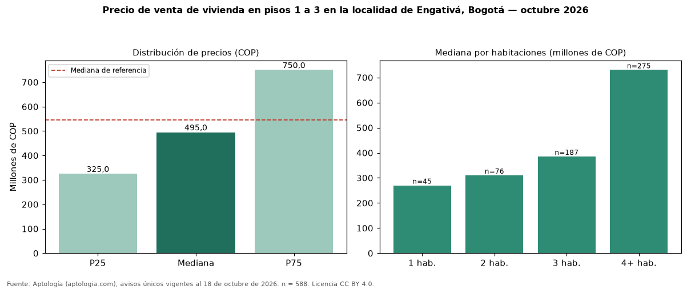

Precio de venta de vivienda en pisos 1 a 3 en la localidad de Engativá, Bogotá — octubre 2026
COP 495 millones es la mediana de venta de vivienda en pisos 1 a 3 en la localidad de Engativá, Bogotá, según 588 avisos únicos. Eso es 9 % menos que la mediana de toda la oferta de venta en la localidad de Engativá, Bogotá (COP 545 millones). En todo Bogotá, la misma combinación tiene mediana COP 835 millones (−41 %). Por metro cuadrado, la mediana es COP 4.821.918/m² (+5 % frente a COP 4.600.000/m²), puesto 12 de 19 localidades comparables. Cruzando con la oferta de arriendo equivalente, la rentabilidad bruta implícita es 7,5 % anual. El rango intercuartílico va de COP 325 millones a COP 750 millones (razón 2,3). Por habitaciones: 1 habitación, COP 270 millones (n = 45); 2 habitaciones, COP 310 millones (n = 76); 3 habitaciones, COP 385 millones (n = 187); 4 o más habitaciones, COP 730 millones (n = 275). Datos abiertos CC BY 4.0 de Aptología; fuente y búsqueda de inmuebles: https://www.aptologia.com/venta/bogota/engativa. Archivos: PDF de 2 páginas, CSV con las cifras y gráfica PNG.

| Avisos únicos | 588 |
|---|---|
| Percentil 25 | COP 325.000.000 |
| Mediana | COP 495.000.000 |
| Percentil 75 | COP 750.000.000 |
| Mediana por m² | COP 4.821.917 |
Fuente: avisos vigentes de portales inmobiliarios recopilados por Aptología, deduplicados (mínimo 30 avisos únicos por celda). Precios pedidos, no cerrados. Fecha: 2026-10-18.